|
面對全球大流感，已經快三年沒有出國了，偶爾看看過去的旅遊照片，發個回顧文章取個溫暖，還是好想出國啊!!!!!這應該是很多人的心聲~對吧!面對疫情，總在等能搭飛機旅遊的機會，沒關係，在還沒能出國前，其實認真觀察會發現世界就在我們周圍，我們可以在各國的藝術中，感受文化之美。
今天要來帶大家用展覽旅遊世界，從義大利出發，看一下屬於義大利的怪美攝影藝術，再來到英國，瑪莉官會帶我們進入時尚設計的領域，說到了設計，怎麼能忘記德國設計iF呢? 還有漫畫大國日本，看一下紅遍世界的巨人是如何繪製的，最後回到台灣，街頭嘲諷的幽默正在延燒中，那我們開始吧! |
| 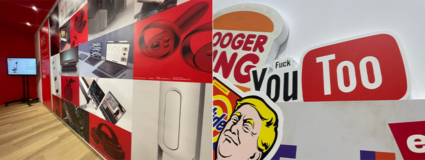 |
“乘客請繫緊安全帶，飛機準備起飛”
第一站: 義大利
【義大利怪美殿堂特展TOILETPAPER: The Studio】
| 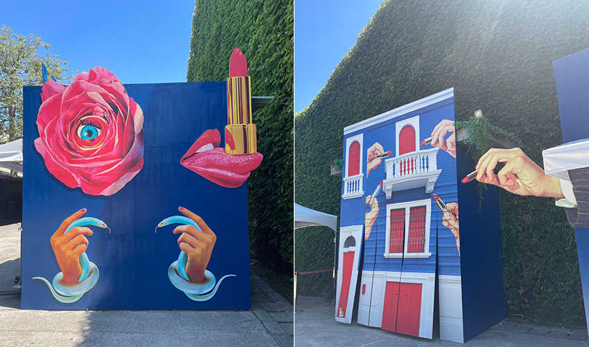 |
在華山的怪美的特展，由義大利藝術家莫瑞吉奧 ．卡特蘭（Maurizio Cattelan）與廣告時尚界攝影大師耶波羅．法拉利（Pierpaolo Ferrari）所創辦的《TOILETPAPER》概念來貫穿，兩位大師不受拘束的大玩藝術。從購票處就能看到強烈怪誕的風格。
| 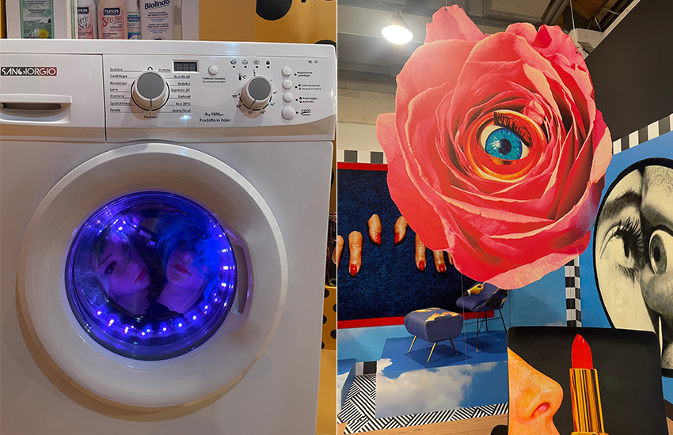 |
展場的每一處也都是讓人驚喜連連，大家有看過洗衣機洗人頭嗎? (是假人頭不要緊張~)
| 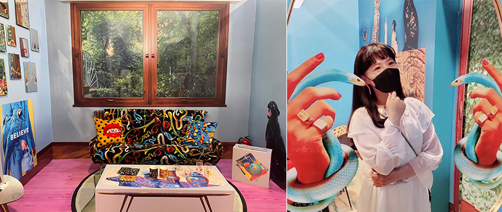 |
展場像是時尚攝影棚一樣，隨便拍都超搶眼，完全不用修圖濾鏡，融入前衛的藝術中。(缺一條蛇耳環嗎?)
| 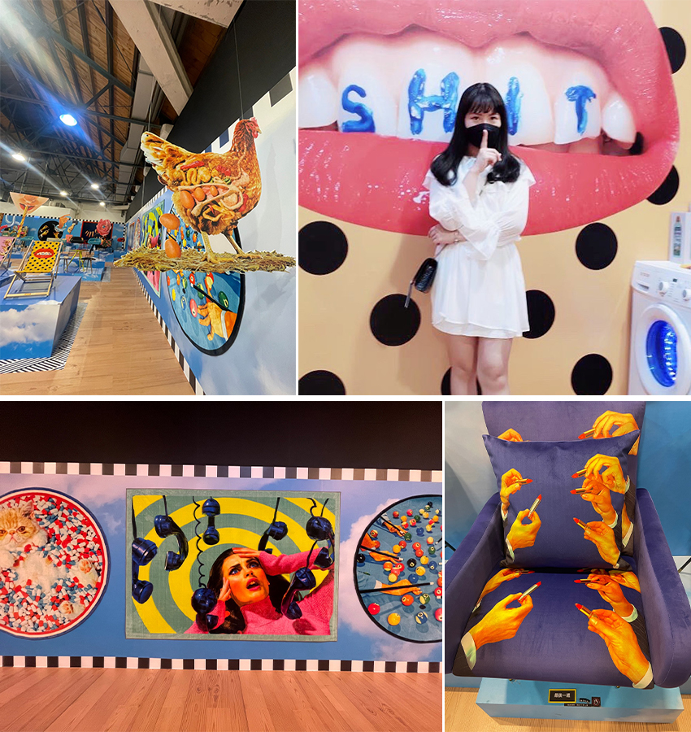 |
SHOWROOM整區都是展品販售，沙發喜歡的話剩下最後一張了喔!
第二站: 英國
【瑪莉官：時尚革命者】
在北美館B1展示的是「迷你裙之母」時尚設計師瑪莉官（Mary Quant），這個展覽回顧1955~1975年之間的代表作品，整個展場以黑色搭配橘色、黃色等高彩度，創造出鮮明對比。
| 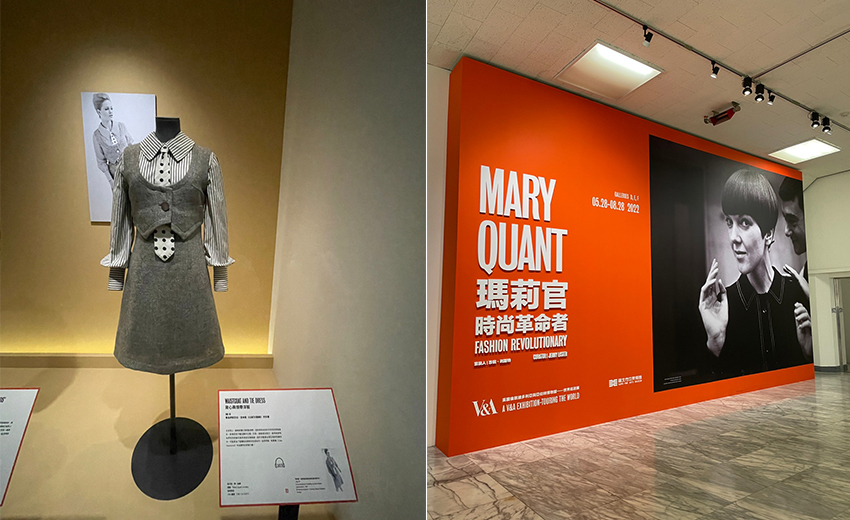 |
以現代的時裝來看，展示40年前以上的作品，現在看起來還是超時尚的，立體的剪裁去凸顯身形曲線，這些真的洋裝真的會想購買耶!
| 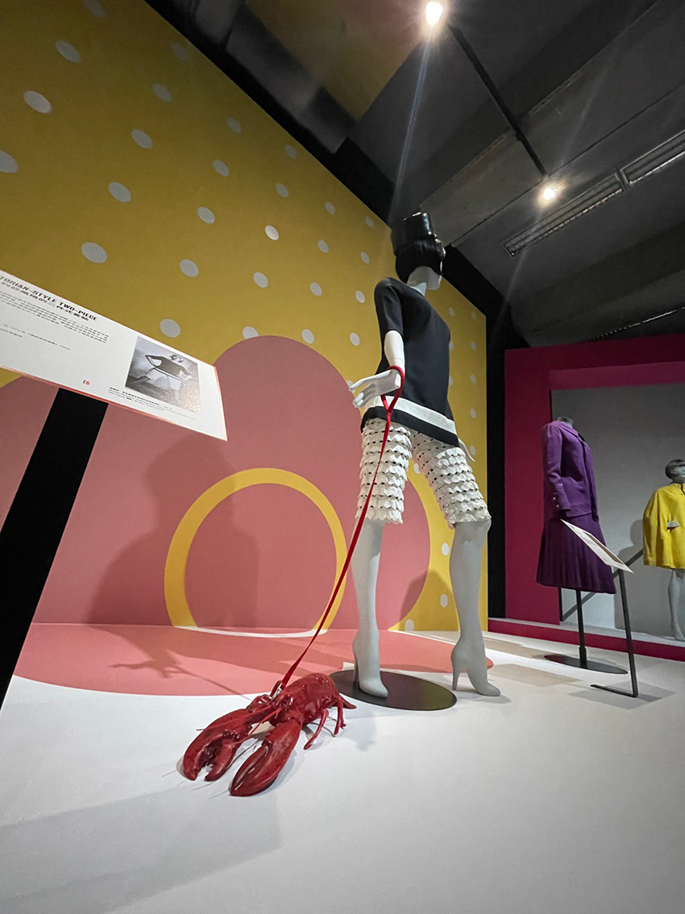 |
原來以前流行的寵物是龍蝦?
| 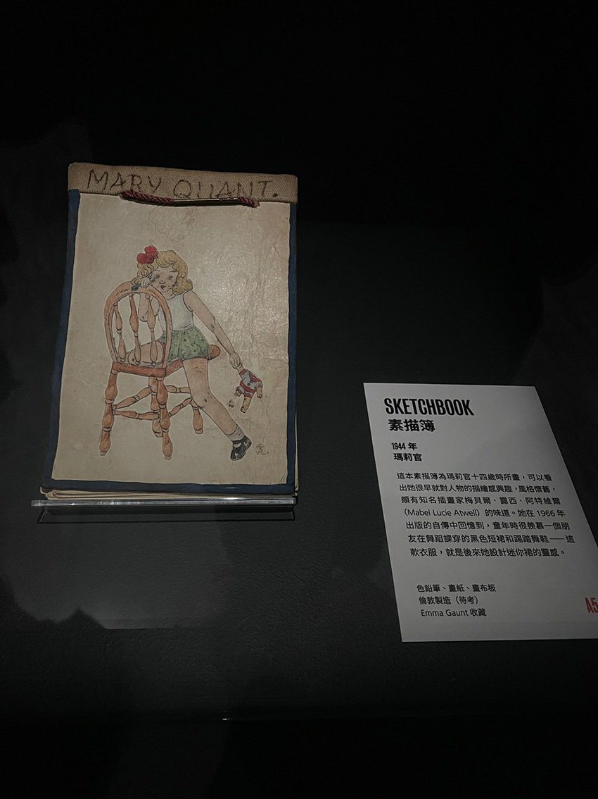 |
看到手繪稿總是特別有感的設計師
| 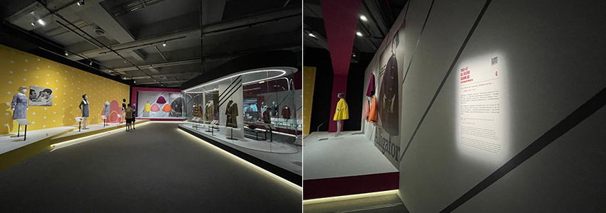 |
用投影的方式呈現作品說明，讓大家直覺的聚焦在這個地方。
第三站: 德國
【iF design award 2022】
松菸目前正在展覽的國際知名設計大獎-德國iF design回顧， 現場展示2022年得獎作品，也可以看到仁寶的許多作品於表板及簡介上，不用到德國我們在台灣就能欣賞這些產品與介面設計。
| 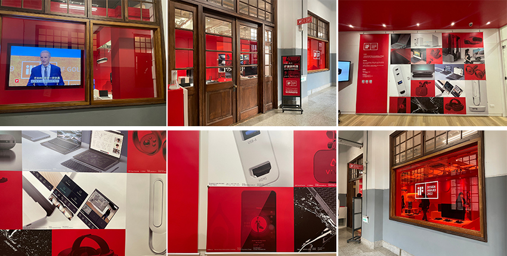 |
第四站: 日本
【進擊的巨人展FINAL ver. TAIWAN】
信義新光展示的進擊的巨人展，大家準備獻上心臟了嗎? 這次的展覽將帶大家進入作者的原稿世界。
| 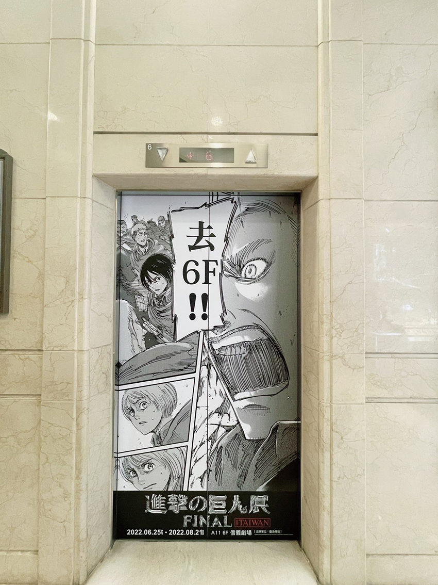 |
在入口到達前，看到電梯的宣傳爆笑出來了，走吧!去6樓!
| 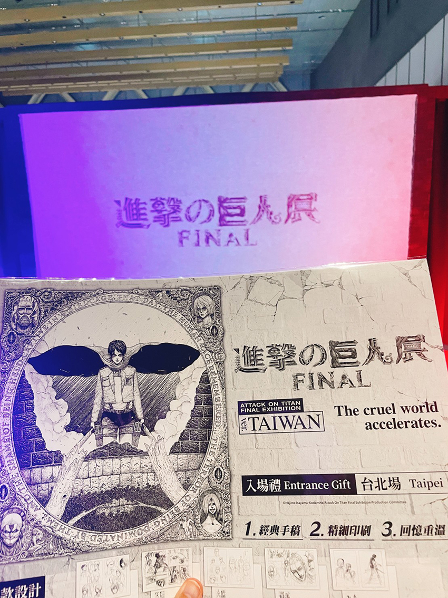 |
開場以影片回顧，讓大家回憶起巨人們是如何啃食我們人類，人類又該如何面對呢?(可以選擇往城牆內，還是城牆外移動)有看這一部動漫的應該都知道，劇情一開始走向是被困在城牆內的人們，想要戰勝牆外巨人，到外面的世界去，那當然要往比較不熟悉的城牆外開始發展~出發!
| 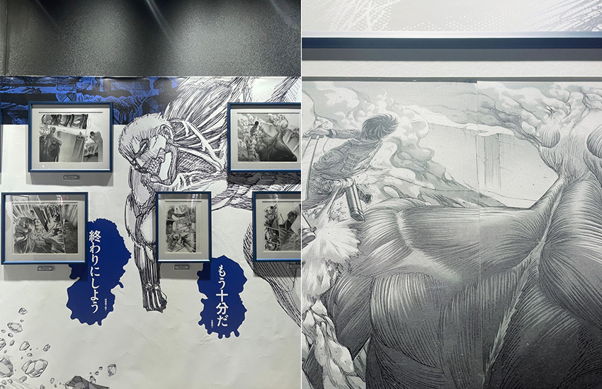 |
整個展場覽以作者的手繪稿來展示，可以看到在繪圖上，細緻流暢的肌肉線條，還有衝擊力畫面感十足的場面。
| 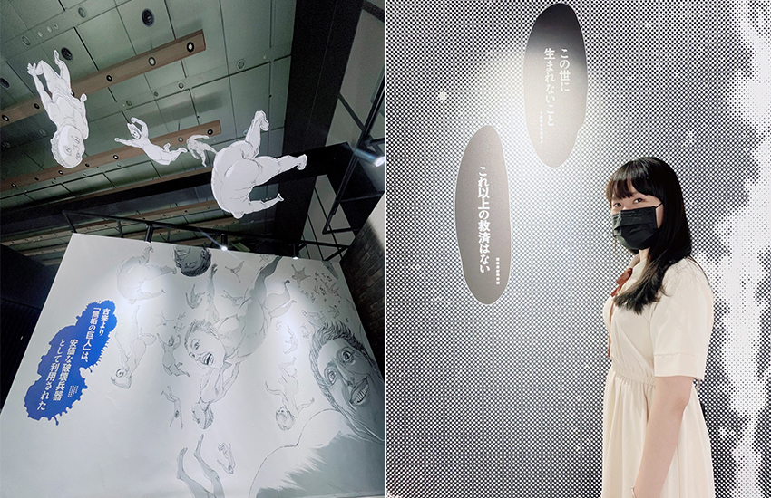 |
展中也穿插了一些漫畫中的經典對話。阿!巨人掉下來了，快跑!!!
“飛機降落，抵達台灣”
第五站: 台灣
【KEA TSAI 《STICKER UP!》】
最後一站我們來看一下這個令人會心一笑的台灣藝術家KEA TSAI，以反諷、街頭、政治串聯的宣言作品。
| 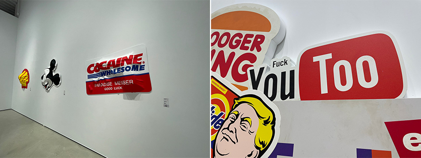 |
平常在身邊再熟悉不過的大品牌及標語，通通被改名(而且改的好自然XD)，邊看展邊跟朋友一起玩猜猜樂，看誰先猜出原字是甚麼，超好玩!
| 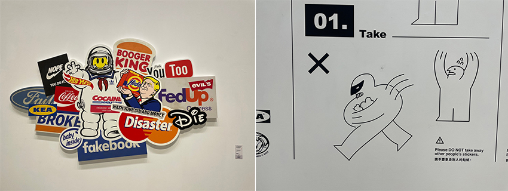 |
| 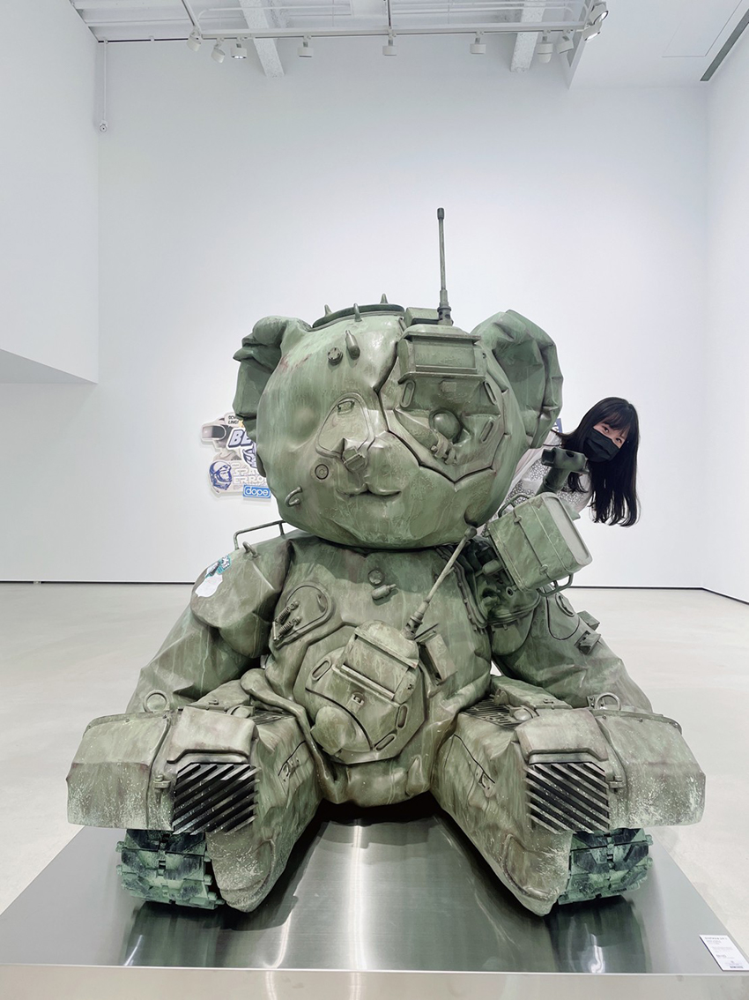 |
以上就是今天的分享，不用搭飛機就能遊世界看展覽，希望大家喜歡~也歡迎到展場去逛逛!